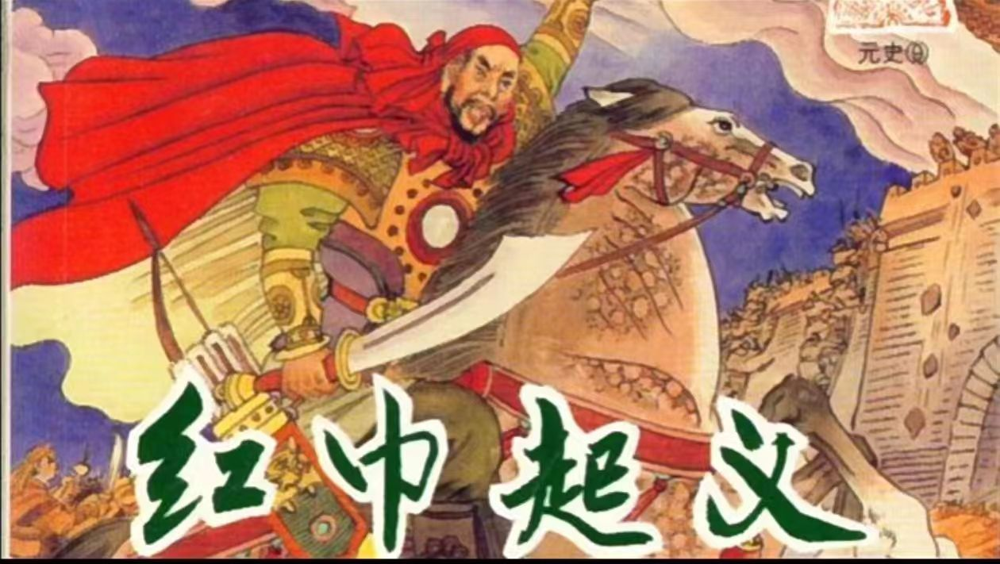

崖山海战，发生于公元1279年，是南宋与元朝之间的一场决定性战役。这场战役标志着南宋王朝的覆灭，以及中国历史上一个时代的结束。
崖山海战背景复杂，涉及南宋与元朝之间的政治、经济、文化和军事等多个方面的矛盾。南宋末年，政治腐败，国力衰退，而元朝则逐渐崛起，统一了北方大部分地区。南宋朝廷在应对元朝的侵略时，由于内部矛盾重重，军事力量分散，无法形成有效的抵抗。
在崖山海战中，南宋军队与元军展开了激烈的战斗。南宋军队虽然英勇抵抗，但由于力量悬殊，最终未能抵挡元军的进攻。在战斗中，南宋朝廷的许多重要官员和将领战死沙场，大量士兵和平民百姓也遭到了屠杀和俘虏。
崖山海战的失败对南宋王朝产生了深远的影响。首先，它导致了南宋的灭亡，中国历史上的一个朝代因此结束。其次，它给中国人民带来了巨大的痛苦和创伤，许多人失去了家园和亲人。此外，崖山海战也成为了中国历史上的一个耻辱，提醒着人们要铭记历史，奋发图强。
对于崖山海战的反思，我们应该认识到一个国家的强盛离不开人民的团结和国家的治理。同时，我们也应该铭记历史，从中吸取教训，不断提高国家的综合实力，防止类似的历史悲剧再次发生。此外，我们还应该加强爱国主义教育，弘扬民族精神，激发人民的爱国热情，为国家的繁荣富强而努力奋斗。
总之，崖山海战是中国历史上的一次重大事件，它给我们留下了深刻的教训。我们应该铭记历史，不忘国耻，为国家的繁荣富强而努力奋斗。
崖山海战，发生于公元1279年，是南宋与元朝之间的一场决定性战役。这场战役标志着南宋王朝的覆灭，以及中国历史上一个时代的结束。
崖山海战背景复杂，涉及南宋与元朝之间的政治、经济、文化和军事等多个方面的矛盾。南宋末年，政治腐败，国力衰退，而元朝则逐渐崛起，统一了北方大部分地区。南宋朝廷在应对元朝的侵略时，由于内部矛盾重重，军事力量分散，无法形成有效的抵抗。
在崖山海战中，南宋军队与元军展开了激烈的战斗。南宋军队虽然英勇抵抗，但由于力量悬殊，最终未能抵挡元军的进攻。在战斗中，南宋朝廷的许多重要官员和将领战死沙场，大量士兵和平民百姓也遭到了屠杀和俘虏。
崖山海战的失败对南宋王朝产生了深远的影响。首先，它导致了南宋的灭亡，中国历史上的一个朝代因此结束。其次，它给中国人民带来了巨大的痛苦和创伤，许多人失去了家园和亲人。此外，崖山海战也成为了中国历史上的一个耻辱，提醒着人们要铭记历史，奋发图强。
对于崖山海战的反思，我们应该认识到一个国家的强盛离不开人民的团结和国家的治理。同时，我们也应该铭记历史，从中吸取教训，不断提高国家的综合实力，防止类似的历史悲剧再次发生。此外，我们还应该加强爱国主义教育，弘扬民族精神，激发人民的爱国热情，为国家的繁荣富强而努力奋斗。
总之，崖山海战是中国历史上的一次重大事件，它给我们留下了深刻的教训。我们应该铭记历史，不忘国耻，为国家的繁荣富强而努力奋斗。

红巾军起义是元末由韩山童、刘福通、徐寿辉等人领导的农民起义，发生在元朝顺帝至正十一年（1351年）至元朝至正二十七年（1367年）。因起义军头裹红巾，故称“红巾军”，又因其烧香聚众，亦称“香军”。
起义最初在河南颍州（今安徽界首）爆发，随后迅速蔓延到全国各地。红巾军起义的爆发，有其深刻的社会根源。元末，统治者横征暴敛，政治腐败，阶级矛盾日益激化，民不聊生，各地起义频发。
韩山童、刘福通等人利用白莲教、弥勒教等民间宗教形式，组织群众，宣传“弥勒下生，明王出世”的宗教迷信思想，以“天下大乱，弥勒下生，明王出世”为口号，策划起义。至正十一年五月，韩山童、刘福通在颍州发动起义，建立红巾军，随后攻占颍州、亳州等地。
红巾军起义的爆发，沉重打击了元朝的统治，加速了元朝的灭亡。在起义军的冲击下，元朝的统治土崩瓦解，各地军阀纷纷割据，形成了与明朝建立前的混乱局面。
红巾军起义虽然最终未能推翻元朝的统治，但其在历史上的地位和作用不容忽视。它沉重打击了元朝的统治，加速了元朝的灭亡，为明朝的建立奠定了基础。同时，红巾军起义也反映了当时社会的深刻矛盾和阶级斗争的激烈程度，对于研究元末明初的历史具有重要的参考价值。